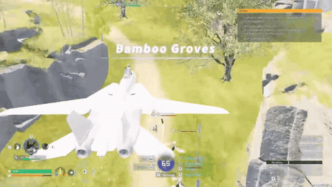
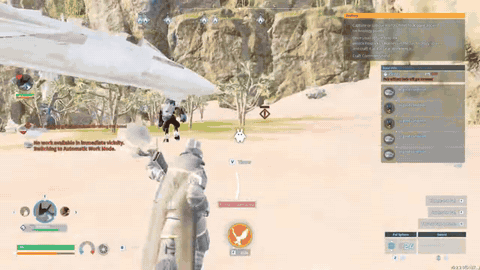
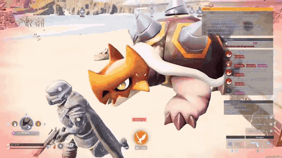
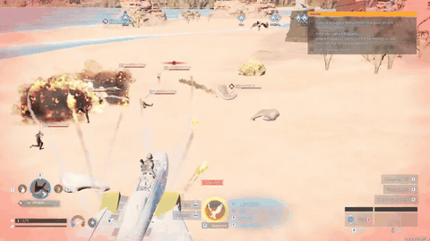

Palworld review: monster catching, survival and an F-14 fighter jet mod

Palworld is an open-world survival and crafting game from Pocketpair. You catch creatures called Pals and make them do everything: fight, farm, build, mine, even run your factories. You can ride them across land, sea and sky, and you can play it with friends.
For this one I downloaded an F-14 fighter jet mod and cheated my way into owning all the best Pals in the game. Then I spent most of the video holding them up one at a time and asking if they're cool. A few of them are. One has a head that is trying to leave its body. The shy one takes forever to pick up.

Then I flew the F-14 around the map, through a canyon and over an enemy camp on the beach, and explained why cheating is an art form. One pistol shot at a giant armored Pal set off a huge pink explosion. If I do this right, I beat everyone, unlock every achievement and keep a Steam profile that looks completely legitimate.



It's $29.99 on Steam. Part 3 of my modded Palworld run is below.